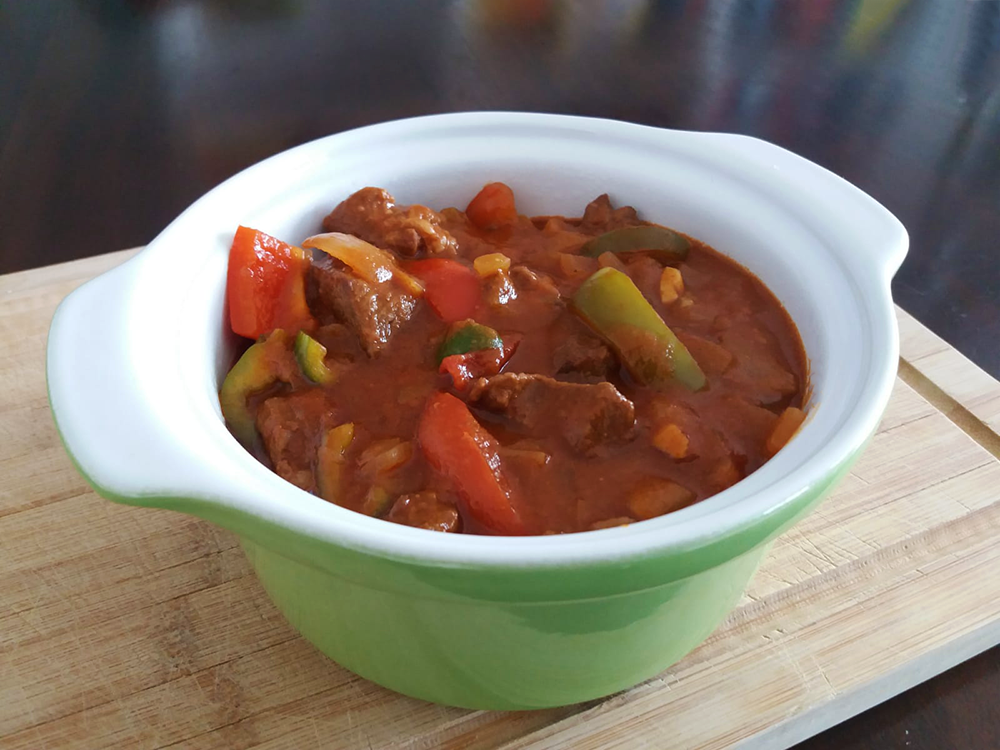

thaise massamancurry

limburgs friet zoervleis
avocado salade

amerikaanse caesar salade

italiaanse caponata

biefstuk chimichurri & gegrilde groenten

bami met spinazie
japanse beef teriyaki

chili sin carne met guacamole

chorizosoep

indiase dahl linzencurry

hongaarse goulash
Voor een vega variant vervang je de riblappen door vegan stoofvlees en de runderbouillon door groentebouillon.

Bereidingsduur: 150 minuten
Aantal personen: 3
Ingrediënten:
700 gram runderriblappen
2 uien
1 teentje knoflook
2 tomaten
1 rode paprika
1 groene paprika
3 eetlepels paprikapoeder
2 theelepels komijnpoeder
2 laurierblaadjes
2 eetlepels bloem
1 blokje runderbouillon
naar wens brood
700 gram runderriblappen
2 uien
1 teentje knoflook
2 tomaten
1 rode paprika
1 groene paprika
3 eetlepels paprikapoeder
2 theelepels komijnpoeder
2 laurierblaadjes
2 eetlepels bloem
1 blokje runderbouillon
naar wens brood
Instructies:
1. Snijd de runderriblappen in stukjes van 1 centimeter en wrijf deze in met bloem, komijn, paprikapoeder, peper en zout. Snipper ondertussen de uien en pers de knoflook uit.
2. Verhit olie in een braadpan en bak het vlees in etappes rondom bruin in 5 minuten. Schep dit vervolgens uit de pan.
3. Voeg de ui en knoflook aan de pan toe en bak 5 minuten op laag vuur.
4. Voeg het vlees, 300 ml water, het bouillonblokje, de laurierblaadjes toe en breng aan de kook. Voeg ook eventueel tomatenpuree toe. Gebruik een warmhoudplaatje en laat 2 uur op laag vuur stoven met de deksel schuin op de pan.
5. Roer af en toe en snijd de paprika en tomaten in stukjes. Voeg deze na anderhalf uur stoven toe aan de pan en voeg eventueel nog een beetje water toe. Laat dit nog een halfuurtje stoven zonder deksel.
6. Haal de laurierbladeren eruit. Serveer met stokbrood of geroosterd brood.
1. Snijd de runderriblappen in stukjes van 1 centimeter en wrijf deze in met bloem, komijn, paprikapoeder, peper en zout. Snipper ondertussen de uien en pers de knoflook uit.
2. Verhit olie in een braadpan en bak het vlees in etappes rondom bruin in 5 minuten. Schep dit vervolgens uit de pan.
3. Voeg de ui en knoflook aan de pan toe en bak 5 minuten op laag vuur.
4. Voeg het vlees, 300 ml water, het bouillonblokje, de laurierblaadjes toe en breng aan de kook. Voeg ook eventueel tomatenpuree toe. Gebruik een warmhoudplaatje en laat 2 uur op laag vuur stoven met de deksel schuin op de pan.
5. Roer af en toe en snijd de paprika en tomaten in stukjes. Voeg deze na anderhalf uur stoven toe aan de pan en voeg eventueel nog een beetje water toe. Laat dit nog een halfuurtje stoven zonder deksel.
6. Haal de laurierbladeren eruit. Serveer met stokbrood of geroosterd brood.